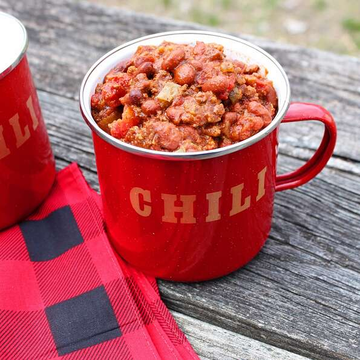

Chili

Nutrition facts
600 calories; protein 30.8g; carbohydrates 55.3g; fat 30.1g; cholesterol 69.7mg; sodium 2092.5mg. Full Nutrition
Ingredients
- 2 pounds ground beef chuck
- 3 (15 ounce) cans chili beans, drained
- salt and pepper to taste
- 1 (15 ounce) can chili beans in spicy sauce
- 3 stalks celery, chopped
Directions
- Heat a large stock pot over medium-high heat. Crumble the ground chuck and sausage into the hot pan, and cook until evenly browned. Drain off excess grease.
- Pour in the chili beans, spicy chili beans, diced tomatoes and tomato paste. Add the onion, celery, green and red bell peppers, chile peppers, bacon bits, bouillon, and beer. Season with chili powder, Worcestershire sauce, garlic, oregano, cumin, hot pepper sauce, basil, salt, pepper, cayenne, paprika, and sugar. Stir to blend, then cover and simmer over low heat for at least 2 hours, stirring occasionally.
- After 2 hours, taste, and adjust salt, pepper, and chili powder if necessary. The longer the chili simmers, the better it will taste. Remove from heat and serve, or refrigerate, and serve the next day.
- To serve, ladle into bowls, and top with corn chips and shredded Cheddar cheese.
Go back to main